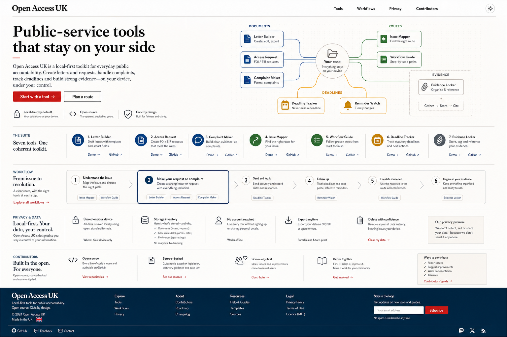

Open Access UK
Open-source tools for fairer public services.
A privacy-first civic toolkit that helps people understand rights, create letters, improve forms, find the right service, and escalate with confidence. Slice 3 adds deadline planning, remediation reports, readiness packs, template bundles, implementation recipes, and contributor onboarding.
- Built with the open web
- Accessible by default
- Yours to use, change, share
- openaccessuk.vercel.app
92%
Toolkit
Everything you need. One connected toolkit.
Seven open-source repositories work together to support transparency, accessibility, accountability, and community-led improvement in public services.
Letter generator
Create useful letters, plan response windows, and follow up with confidence.
Open →Accessible forms
Check readiness, export JSON specs, and generate remediation reports.
Open →Public service directory
Find the right route and generate escalation readiness reports.
Open →Legal templates
Bundle plain-English templates into reusable text and Markdown packs.
Open →Design system
Use accessible components, tokens, and implementation recipes.
Open →Good first issues
Create starter issues and contributor onboarding packs.
Open →Workflows
Real-world workflows. Built for real people.
Guided journeys show how the tools work together to solve common public-service problems without accounts or tracking.
Get information
Start with a letter or template, keep the request focused, export a copy, and use the directory to understand where to go next.
- Choose a request type.
- Draft locally in the browser.
- Export a copy and track replies.
Slice 3 shipped
The toolkit now turns guidance into ready-to-use packs.
Each repo now has one more practical workflow: plan deadlines, bundle documents, repair inaccessible forms, prepare escalations, ship with accessible recipes, and onboard contributors.
Response deadline planner
Letter Generator now calculates follow-up windows and local next steps from the selected context.
Template bundle export
Legal Templates can assemble multiple favourites into one safe text or Markdown pack.
Remediation reports
Accessible Forms groups issues by severity and creates a copyable improvement report.
Escalation readiness
The directory turns a route into evidence groups, blockers, and next-action Markdown.
Implementation recipes
The design system creates component build guidance with accessibility and token notes.
Contributor onboarding
The maintainer helper now creates a beginner-friendly onboarding sequence and first issue.
Open design
Open by design. Better by default.
We design for everyone. Accessible UI, open standards, and community feedback shape every decision.
- Accessible by default
- Open standards
- Transparent and auditable
- Community-driven
:root {
--color-bg: #03070c;
--color-fg: #f8fbff;
--color-accent: #0a84ff;
--color-success: #32d74b;
--radius-card: 20px;
}Visual system
A civic toolkit that feels as considered as the best consumer software.

GitHub
Built in the open. For the open.
Every repo is open source. Star, fork, open an issue, or send a pull request. All contributions matter.
View the suite on GitHubRoadmap
A living roadmap for public impact.
Planned improvements and new tools guided by community needs.
Now
Core toolkit stable, workflows, exports, quality and tests.
Next
More templates, better escalation data, UX refinements.
Later
API and integrations, localisation, more partnerships.